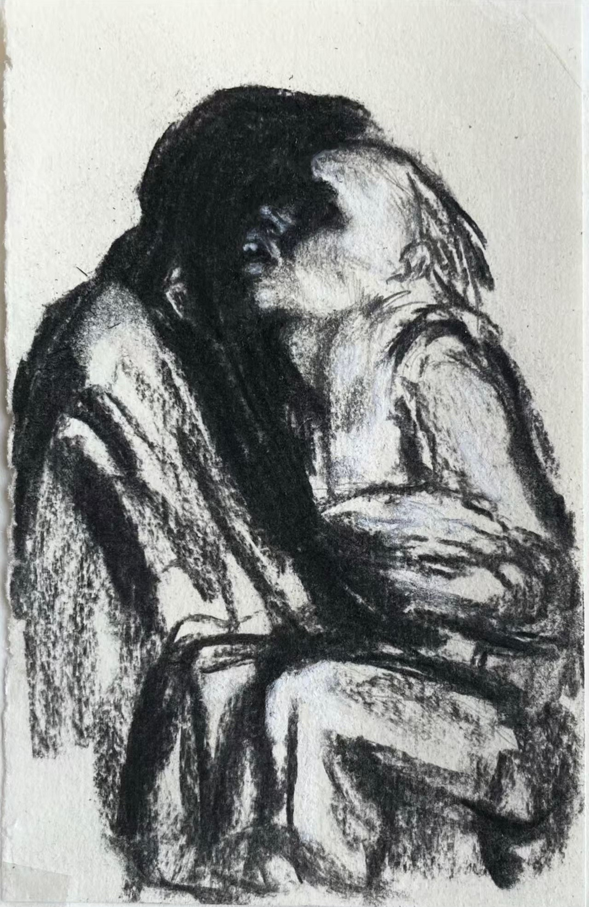

The reason why I am able to argue for the existence of such a cultural shift lies in the fact that HBO's Chernobyl is one of the most important shows of our modern age. In our current age such a proposition may seem absurd, as the manner in which what can be identified as being "important" is still a topic of contention. For example, the proponents of Literary Democracy back the claim that popularity is a clear indication of literary merit, for they believe that the popular opinion carries unassailable wisdom. On the other extreme, literary elitists argue that anything having a taint of popularity is unworthy of even being considered to have passable literary merit. Such extreme takes on the discussion have, as a result, brought out a more relativistic answer to the question of how one can identify a piece of media as being significant. It is now commonplace for individuals to deny the existence of an objective "greatest" (or the most important in our case) when they are faced with such a question and argue that it is in flux dependent on the preferences of an individual. Such a solution at first might seem to be a fulfilling answer, an answer that satisfies everyone in a manner unique to each individual.
In his essay Establishing the Canon of Weird Fiction, S.T. Joshi refutes such a relativistic solution. His argument mainly stems from the fact that humans by nature have in possession only a finite amount of time to drink up the infinite well of literary, musical, artistic, and other aesthetic products. He argues that whether humanity realizes it or not there must be an ideal way of demarcating which to consume and which to justifiably bypass. He adds that such a demarcation (or canonization according to S.T. Joshi) would "establish certain criteria that will result in the exclusion of or, at any rate, the setting up of a hierarchy for certain works that are seen to be deficient or sub-standard".2 This argument by the book critic might be seen as making a full circle back to our inability to answer. He however makes the distinction that to form a canon one has to look into contemporary relevance. He agrees with the relativists' claim that the canon (or "the most important") is in flux, yet he disagrees with the point that it is according to the person that the canon changes; rather it is according to the era that the inquiry is being made.3 Thus when I dictate that "Chernobyl is one of the most important tv shows of the current age", I do not praise its popularity, as one would have done for Game of Thrones (at least for the first few seasons), or for the quality of its screenwriting , as one would have done for Breaking Bad. Rather, I would prefer to praise the show for being fitting of the contemporary aesthetic outlook.
What do I mean when I say "ability to produce works fitting the contemporary aesthetic outlook"? Take for instance Lovecraft: according to S.T. Joshi, as people became more and more secular in the late 19th century, the prominence of creatures (such as werewolves, vampires and many others) which had their roots in religion decreased. This in turn let writers such as Lovecraft or Blackwood give "voice to the myriad terrors facing a rapidly changing Anglo-American culture."4 It was secularization that changed the "contemporary aesthetic outlook" which in turn made Lovecraft and "Weird Fiction" in general as popular as it is now. It is my argument that a new kind of need has emerged for the contemporary for the writer, and it is this need that Chernobyl is able to satisfy while writers of "Weird Fiction" are unable to do so. In order to understand this new need of the contemporary audience I believe it is first important to understand why Lovecraftian horror became unsatisfactory in the first place.
Similar to how secularization made the classical tropes of vampires and werewolves less and less significant, the rapid progression of technology had the same effect on Lovecraft's work. Take for instance Lovecraft's relationship with the sea. Most of his iconic creatures such as "Cthulhu" or "the Deep Ones" carry with them an amphibian appearance. This stemmed from Lovecraft's deep fear/obsession with the sea in general. For him it represented what was beyond the reach of the human mind to understand. It was from the Ocean that the monstrous "Cthulhu" burst out of, it was in a ship voyage where the "Deep Ones" first showed themselves. The sea harboured too many secrets in its dark depths for Lovecraft not to fear. It was something completely foreign to him and something that his readers could resonate with. It was the relevance of this "fear of the unknown" which made Lovecraft and many of his fellow "Weird Fiction" writers popular. Nevertheless, the relevance of this fear was not something to last. Monsters of Lovecraft, which symbolized the "impossible" external terror, a realm beyond understanding or control, has lost the special "umpf" that it once had. Though much of the oceans still remains to be explored in our contemporary age, the rapid progression of technology dispelled the terror people felt alongside Lovecraft. Places and concepts which were completely alien to human comprehension started to become the center point of human sciences, politics and war. As science progressed, many things that seemed impossible became possible: we were able to compute a stupidly large amount of distance in mere hours, perceive images from long long distances, measure microscopic details with neverseen clarity... Seeing the impossible take place, people stopped fearing the impossible and rather started dreading what was possible. The fears one might have had about this "external" are now being replaced with anxiety about "possible" outcomes-human errors and choices that lie squarely within our control.
To have a better understanding of this switch from fearing the impossible to the possible, one has to know how science helped escape the fear of the unknown. It was Rene Descartes who was able to find a way of making sense of what the senses could not present. According to Hannah Arendt, the invention of the telescope not only facilitated our understanding of the universe, it was also the catalyst that made Descartes start to resent his senses. It was the long held belief of Descartes and many others that the faculties of our senses and our reason were enough to uncover the realities of the universe, yet the fact that it was a man made tool that was able to refute the illusion that "common sense" dictated, shattered the given belief. It was this particular event that made Descartes dictate "cogito ergo sum"5 and gave birth to the "Cartesian solution". According to the Cartesian solution, the only place one is able to find certainty is in concepts created by one's mind. Instead of relying on the senses or measuring instruments, one could only depend on his own mental faculties, as according to Descartes the mind could only truly understand the concepts itself produced and retained in and of itself. This is the reason why Descartes gave significant value to the use of mathematics, which due to being a product of our minds, had a certainty that the human mind could depend on. This, I argue, is the thrust of humanity against the unintelligible; it was this innovation introduced by Descartes that let humankind challenge the incomprehensible.
The manner in which this "thrust" makes unintelligible things intelligible in our daily lives is portrayed (either intentionally or unintentionally) in the 2nd episode of Chernobyl. Valery Legasov (played by Jared Harris) is aware that the only manner in which he can motivate the cabinet members to take action against the Chernobyl disaster is to use terms that they can understand.
"Every atom of U-235 is like a bullet traveling nearly the speed of light, penetrating everything in its path... Three million billion trillion bullets in the water we drink, the food we eat, in the air we breathe."
Valery knows that if he were to attempt at describing the effects of Uranium-235 on the human body as how it is, the council would not even be able to make sense of what is happening for it is beyond the understanding of the human senses much like what was revealed by the telescope during Descartes' time. Valery's only chance of appealing to his fellow man was to withdraw away (or in other words alienate himself) from what it really was about (neutrons and radiation) and move towards concepts produced by and thus understandable for the human mind (numbers and bullets). It was the certainty and clarity that was brought by the appeal to units that were the product of the human mind that facilitated the Soviet government's taking action against the catastrophe that went beyond human comprehension. It was this clarity that gave Valery enough strength to facilitate the Soviet Union to contain this calamity.
It is not that this metaphor regarding bullets and neutrons altered Valery's argument in a substantial manner. Even if he were to not use the metaphor his request would have been the same, to take action regarding Chernobyl. With the clarity brought by the metaphor, however, he became not only more understandable but also more persuasive. Let me give another metaphor in order to explain the significance of this move by Valery. Take the insight of the ancient mathematician, physicist and engineer Archimedes who said "Give me a place to stand and with a lever I will move the whole world."6 It is not that Archimedes has the strength of Atlas but instead what gives him this power is the distance the Archimedean point provides.
In Valery's case however, in order to find the strength to convey the objective truth regarding the calamity at hand, he had to distance himself from what was really occurring (the external) to his own mind (the internal). This can be seen as the Cartesian solution to the nightmares of uncertainty that plagued Descartes himself. For Descartes this was the solution for the massive rift appearing between what we were able to see (appearance) and what it really was (reality). In order to reckon with the consequences of this separation between the appearance of an object and what it really was, Descartes pulled the Archimedean point within himself. With his "nightmare of non-reality" he was able to distinguish between the tree that one's own senses provide and the "seen tree" that is perceived via introspection. This "seen tree" does not exist independently of us but instead is the representation of the tree that we sense via our sense organs, in our mindscape, and it is in this concept belonging to the mind where Descartes finds certainty. "Though one cannot know truth as something given and disclosed, man can at least know what he makes himself."7 At this point, as Hannah Arendt states, objective reality dissolves into subjective states of the mind, for the Archimedean truth lies within these states.
The mathematization of physics is a clear symptom of this. For Descartes the main appeal of mathematics was that it was a concept of the mind.8 Much like his "Cogito", it had a certainty which the senses could not capture. Thus, when men were faced with the unknown of Lovecraft, they were able to rely on concepts of their minds to be able to react or even understand. One could say that in order to make sense of what was external to us, we -via the use of concepts such as those of mathematics- characterized it with our internal concepts. The significance of what I am saying is that the manner in which we are making sense of what can be seen as "impossible" or in other words something that is external and incomprehensible to our human mind and senses, is made "possible" by rationalizing it into something that exists internally, such as math. Take for instance the tree that I just mentioned. According to Hannah Arendt's exemplification of Descartes' move, we do not perceive the given tree itself but instead in order to have a more clear understanding of it we attribute it to numerical concepts. The given tree transforms into a brown extended object with a height of y and a width of x. Even though answering each and every question given by nature with mathematical patterns resulted in man getting answers only in "abstract concepts, no more than that man can always apply the results of his mind",9 we thrived using it. We were able to calculate how celestial bodies move, make sense of how gravity worked and most importantly were able to harness the power of the atom. Hungry for the power able to bend the will of nature, as Hannah Arendt argues, we became obsessed with entombing the Archimedean point within our mindscape. We stopped caring about what something really was and instead started focusing on what we have attributed it to in our minds. Instead of appreciating what is external to us, we voluntarily entombed ourselves in our own minds for the sake of power. In short, we were able to put up a fight against the impossible/external that Lovecraft so greatly feared for. The impossible became only another concept made up of numerical data that we attribute to it. Instead of fearing what was outside our own capacity we started to dread what we could do.
It is due to this clarity , provided by our own obsession with what we attribute to what is external to us, that the TV show was able to portray the Chernobyl calamity solely from the human perspective. This is evident as throughout the show what was criticized was not the attempt of humankind harnessing forces beyond itself, but instead the half-hearted manner in which this was attempted. The source of the horror which we saw in the first episode was not the explosion itself but rather was the human cause of it. Take for instance the first scene of the show where the power plant emitting the iconic ethereal light is dwarfed by the firefighters wife who watches it from her house. This can be seen as the first of many instances where human prowess is deified or even fetishized while the actual event is portrayed to be a mere imitation of it. It is not the ethereal light coming out of the power plant which has the center stage but instead the character of Lyudmilla Ignatenko. The audience does not even see the explosion occur until the last episode of the show. Another instance is from this last episode of the show. As clearly stated by Valery before the court, the reason why such a calamity occurred was mainly due to the Soviet Union's desire to have nuclear energy working for them in the cheapest manner possible. It was their need to use cheaper materials that prompted the Soviet Union to use graphite and made the fail safe protocol into a doomsday device. It was not the external immensity of the energy provided by the splitting of the atom but instead the internal (or the human need as one could say) need of cutting corners which is portrayed to have led to this calamity. As Valery continues to recount the causal chain that caused the catastrophic events we see flashbacks from the first episode, the ethereal light, the lovecraftian-like force that burned people without flames, people saying that the impossible just occurred... All of these find their root in human negligence. What is portrayed as this Lovecraftian horror was only an effect of our human actions and nothing more.
When I claim that HBO's Chernobyl is able to satisfy a unique itch of the modern consumer, the manner in which it is able to do this is by appealing to the self centered view of the world that was brought by the Cartesian solution. I do not believe that the producers of Chernobyl actually read Hannah Arendt and were planning on reflecting this aspect of her writing in their tv show. Instead, I believe that their self-centered way of storytelling attest to Hannah Arendt's correct analysis of the contemporary world.
Chernobyl is not a story about the dangers of nuclear energy, instead it is the story of what human negligence can bring about. This migration of fear from physical realities to social -or more precisely, to human- ones is a sign of how times have changed how we view reality itself. Even though the effects of Chernobyl (the cataclysm itself) were quite physical, the show forces one to inspect what occurred there from an alienated/inward-facing lens. It asks us to withdraw within ourselves in order to reach clarity in a situation where none can be found externally. And even though the audience is able to rationalize what just happened, we are, nonetheless, stuck in prison made by our own minds. This inward perspective that Chernobyl asks us to look from marks a broader cultural shift: from valuing the external world to prisoning ourselves in the internal one.
1 To the uninitiated, "Weird Fiction" is a genre of horror fiction which was pioneered by Lovecraft and his fellow writers in Arkham publishing which focus on Cosmic Horror and concepts beyond our understanding.
2 S.T. Joshi. "Establishing the Canon of Weird Fiction." Journal of the Fantastic in the Arts 14 (2003): 333.
3 To be more clear he argues that there exists a set of literary works written in that particular era which form "the canon" of that era.
4 Joshi, "Establishing the Canon of Weird Fiction", 340.
5 To have a more clear understanding of how Descartes came to the conclusion of "Cogito Ergo Sum" (or to quote what Descartes really wrote in Latin "ego sum, ego existo, quoties a me profertur, vel mente concipitur, necessario esse verum") I recommend reading his 1st and 2nd Meditations of his.
6 Tzetzes, John. Book of Histories (Chiliades). Book 2, lines 129-30. Translated by Francis R. Walton.
7 Hannah Arendt, The Human Condition (Chicago: University of Chicago Press, 2018), 282.
8 As many of my peers have made it quite clear, the view that numbers are the creation of one's mind is not an uncontested view. There exists a myriad of views regarding the nature of numbers but as one might have guessed this paper is not necessarily about the philosophy of mathematics. Instead I am simply portraying how relevant Hannah Arendt's analysis of the Cartesian solution is to the contemporary age. I simply use this way of viewing mathematics as a way of depicting a broader concept presented in the book "The Human Condition".
9 Arendt, The Human Condition, 287.